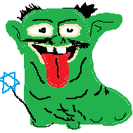

Tere tulemast!
See on veebirakenduste tunnis käsitsi kirjutatud leht
Palun kasuta navigeerimismenüüd, et leida info!
Juhend
1. Kui vajutada nuppu "Vasakule" või "Paremale" liigub kast kas vasakule või paremale.2. Kui vajutada nuppu "Peida tekst", siis läheb kast kokku ja peidab teskti ära.
3. Kui vajutada nuppu "Kuva tekst", siis tuleb teavitus, et "Kohe kuvab tekst" ja siis kuvatakse tekst.
4. Kui hiirega minna teksti kasti peale, siis tekst muutub punaseks ja kui hiir ära võtta, siis mustaks tagasi.
5. Kui hiirega minna teksti kasti peale ja hoida LMB/vasakut hiire nuppu peal, siis saab kasti liigutada kuhu iganes ekraanil (Vasakule/Premale nuppud ikka töötavad)
6. Nuppude all on 2 pilti, mõlemat pilti saab sama moodi liigutada kui teksti kasti.
7. Kui vajutada nuppu "Fade toggle", siis see töötab sarnaselt "Peida tekst" functioonile ja hajutab kas teksti välja või sisse.
Päevapilt
Ise tehtud pilt
